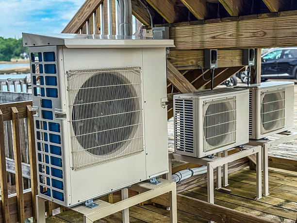
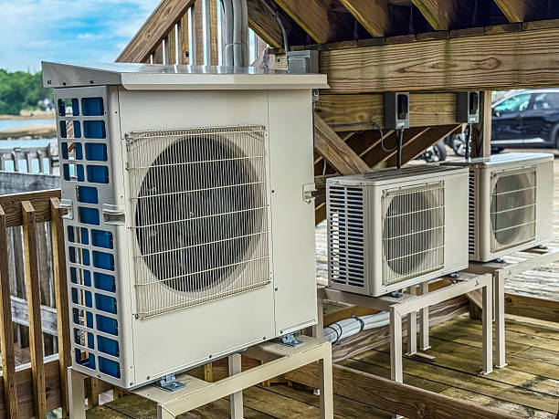

Professional Mini Split Repair Services You Can Trust
When your mini split system breaks down in Galloway, NJ, you need fast, reliable repair service from experienced professionals. Our certified technicians specialize in diagnosing and repairing all makes and models of ductless mini split systems, providing prompt service to restore your comfort quickly and efficiently. With 24/7 emergency availability and same-day service options, we're here when you need us most.
Common Mini Split Problems We Repair
Ductless mini split systems are generally reliable, but like any mechanical equipment, they can experience issues that require professional attention. Our experienced technicians are skilled in diagnosing and repairing a wide range of problems that can affect your system's performance and efficiency.
Refrigerant leaks are among the most common issues we encounter. These can occur at connection points, in the line set, or within the indoor or outdoor unit components. Refrigerant leaks not only reduce system efficiency but can also cause complete system failure if not addressed promptly. Our technicians use electronic leak detectors and pressure testing to locate leaks accurately and provide permanent repairs using proper brazing techniques and high-quality replacement parts.
Electrical problems can manifest in various ways, from complete system failure to intermittent operation. We diagnose issues with control boards, sensors, wiring connections, and power supply problems. Our electrical troubleshooting process follows systematic diagnostic procedures to identify the root cause and implement lasting solutions that restore reliable operation.
Compressor issues can range from hard starting problems to complete compressor failure. We have the expertise to diagnose compressor problems accurately and determine whether repair or replacement is the most cost-effective solution. Our technicians can handle compressor replacement when necessary, ensuring proper refrigerant handling and system charging procedures.
Our Comprehensive Diagnostic Process
Accurate diagnosis is the foundation of effective repair service. Our mini split diagnostic process begins with a detailed assessment of your system's symptoms and operating history. We use advanced diagnostic tools including digital manifold gauges, electronic leak detectors, electrical multimeters, and thermal imaging cameras to identify problems that might not be apparent through visual inspection alone.
Our technicians systematically check refrigerant pressures and temperatures, electrical connections and voltage readings, control board functions and error codes, airflow measurements and duct integrity when applicable, and sensor calibration and response. This comprehensive approach ensures we identify not just the immediate problem but any underlying issues that could lead to future failures.
Emergency Repair Services
HVAC emergencies don't wait for convenient times, which is why we provide 24/7 emergency mini split repair services throughout Galloway and surrounding areas. Our emergency service includes nights, weekends, and holidays, ensuring you're never left without climate control when you need it most.
Our emergency response protocol prioritizes safety and comfort restoration. We maintain fully stocked service vehicles with common replacement parts and specialized tools, allowing us to complete many repairs during the initial emergency call. When parts need to be ordered, we can often provide temporary solutions to maintain basic comfort until permanent repairs are completed.
Emergency service calls receive priority scheduling, with most emergency responses within 2-4 hours of your call. We understand that system failures during extreme weather can be more than just inconvenient – they can be dangerous, especially for elderly family members or those with health conditions that require climate control.
Preventive Maintenance and Repair Prevention
The best repair is the one that's never needed. Our preventive maintenance programs are designed to catch potential problems before they become costly repairs or system failures. Regular maintenance can extend system life, maintain efficiency, improve indoor air quality, and reduce the likelihood of unexpected breakdowns.
Our maintenance service includes thorough cleaning of indoor and outdoor coils, inspection and cleaning of filters and drainage systems, checking and tightening all electrical connections, testing refrigerant pressures and temperatures, calibrating thermostats and sensors, and lubricating moving parts where applicable. We also provide detailed reports on system condition and recommendations for any issues that need attention.
Advanced Diagnostic Technology
Modern mini split systems incorporate sophisticated electronic controls and sensors that require specialized diagnostic equipment for proper troubleshooting. Our technicians use the latest diagnostic technology to accurately identify problems and verify repair effectiveness.
Digital manifold systems allow us to monitor refrigerant pressures and temperatures in real-time, providing insights into system performance that analog gauges cannot match. Electronic leak detectors can identify refrigerant leaks as small as 0.1 ounces per year, enabling us to find and repair minor leaks before they become major problems.
Thermal imaging cameras help us identify hot spots in electrical connections, uneven heat distribution, and insulation problems that might not be visible to the naked eye. This technology is particularly valuable for troubleshooting intermittent problems that might not be present during our initial visit.
Repair vs. Replacement Guidance
When your mini split system needs repair, it's important to make informed decisions about whether to repair or replace the system. Our experienced technicians provide honest assessments and recommendations based on the system's age, overall condition, repair costs, and energy efficiency considerations.
Generally, we recommend repair when the system is less than 8-10 years old and the repair cost is less than 50% of replacement cost. For older systems or when major components like compressors fail, replacement might be more cost-effective in the long term. We provide detailed cost comparisons that include not just immediate costs but long-term operating expenses and reliability considerations.
Manufacturer Warranty Coordination
When your mini split system is still under manufacturer warranty, we coordinate with manufacturers to ensure warranty coverage for applicable repairs. Our technicians are factory-trained on major brands and understand warranty requirements and procedures.
We handle all warranty paperwork and communications with manufacturers, ensuring you receive the full benefit of your warranty coverage. When warranty parts are involved, we can often provide expedited service to minimize downtime while warranty claims are processed.
Indoor Air Quality Impact
A malfunctioning mini split system can negatively impact your home's indoor air quality. Dirty or clogged filters reduce filtration effectiveness, allowing more dust, pollen, and other allergens to circulate. Drainage problems can lead to excess humidity and potential mold growth.
Our repair services always include attention to indoor air quality factors. We clean or replace filters, clear drainage systems, inspect for signs of mold or microbial growth, and ensure proper airflow throughout the system. When necessary, we can recommend additional air quality solutions such as upgraded filtration or UV light systems.
Energy Efficiency Restoration
System problems often result in reduced energy efficiency, leading to higher utility bills even when the system appears to be working. Our repair services focus not just on restoring function but on returning your system to optimal efficiency levels.
Common efficiency-robbing problems include dirty coils that reduce heat transfer, refrigerant leaks that force the system to work harder, electrical issues that affect motor performance, and airflow restrictions that reduce system capacity. Our comprehensive repair approach addresses these issues to restore peak efficiency along with reliable operation.
Smart System Troubleshooting
Modern mini split systems often include smart features and WiFi connectivity that can complicate troubleshooting but also provide valuable diagnostic information. Our technicians are trained to work with smart systems and can help resolve connectivity issues, software problems, and integration challenges with home automation systems.
We can also help optimize your smart system settings for maximum efficiency and convenience, including programming schedules, setting up geofencing features, and configuring maintenance reminders.
Cost-Effective Repair Solutions
We understand that unexpected repair costs can strain your budget, which is why we focus on providing cost-effective solutions that address your immediate needs while considering your long-term interests. Our diagnostic approach helps identify the most critical issues first, allowing you to prioritize repairs based on your budget and comfort needs.
We provide detailed written estimates before beginning any repair work, explaining what needs to be done and why. Our pricing is transparent with no hidden fees, and we're always available to discuss different repair options and their cost implications.
Professional Service Standards
Every repair service we provide meets our high standards for professionalism and quality. Our technicians arrive in clean, clearly marked vehicles with all necessary tools and common replacement parts. We respect your home by using floor protection, cleaning up thoroughly after our work, and disposing of any replaced parts responsibly.
We stand behind our repair work with comprehensive warranties on both parts and labor. Our goal is not just to fix the immediate problem but to ensure lasting reliability and customer satisfaction.
When your mini split system needs repair in Galloway, NJ, trust our experienced professionals to provide fast, effective solutions that restore your comfort and peace of mind. With 24/7 emergency availability, transparent pricing, and a commitment to quality workmanship, we're your reliable partner for all mini split repair needs. Contact us at (888) 918-9104 for prompt, professional service that gets your system back to optimal performance.